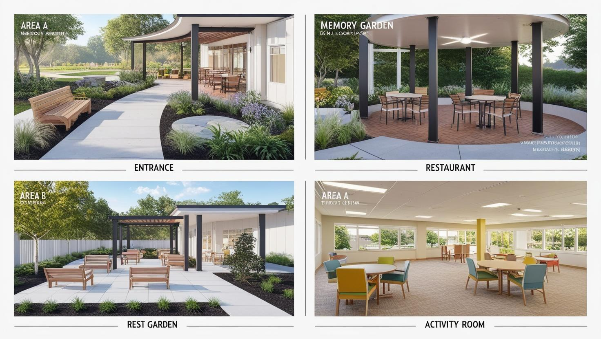

記憶花園 村落導覽
歡迎來到記憶花園！這是一張我們村落的平面配置圖，您可以點擊下方連結或參考圖示來了解各個區域的功能與特色。

主要區域介紹
A區：入口接待與資訊中心
這裡是訪客與長輩們進入記憶花園的第一站，提供諮詢服務、活動資訊以及親切的接待。我們的目標是讓每一位到訪者都能感受到溫暖與歡迎。
B區：陽光餐廳與交誼廳
提供營養均衡的餐點，並設有舒適的交誼空間。長輩們可以在此一同用餐、聊天、閱讀或參與小型團體活動，促進社交與互動。
C區：特色療癒空間
這一區包含了我們精心設計的特色活動場所：
D區：多功能活動室與靜養休憩區
提供舉辦大型講座、工作坊、電影欣賞等多功能活動的場地。同時也設有安靜的休憩區域，供長輩們靜思、小憩或進行個別化的認知活動。
E區：戶外散步道與景觀花園
圍繞著村落的是安全的無障礙散步道，以及四季變換的景觀花園。鼓勵長輩們每日散步，享受陽光與新鮮空氣，親近自然美景。